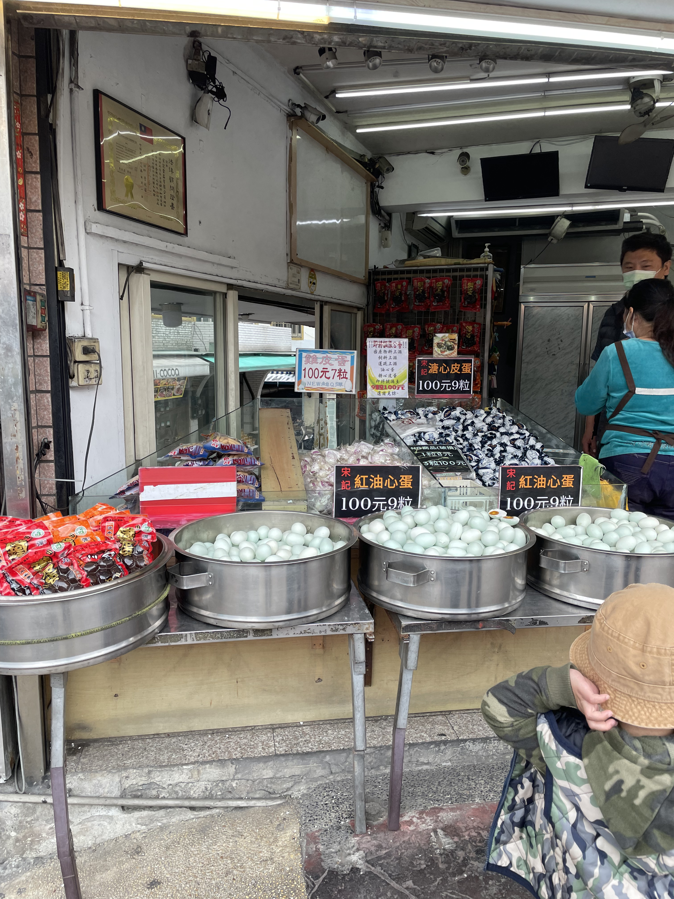
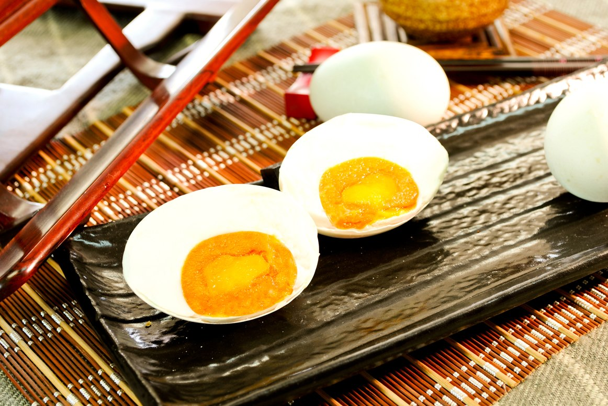
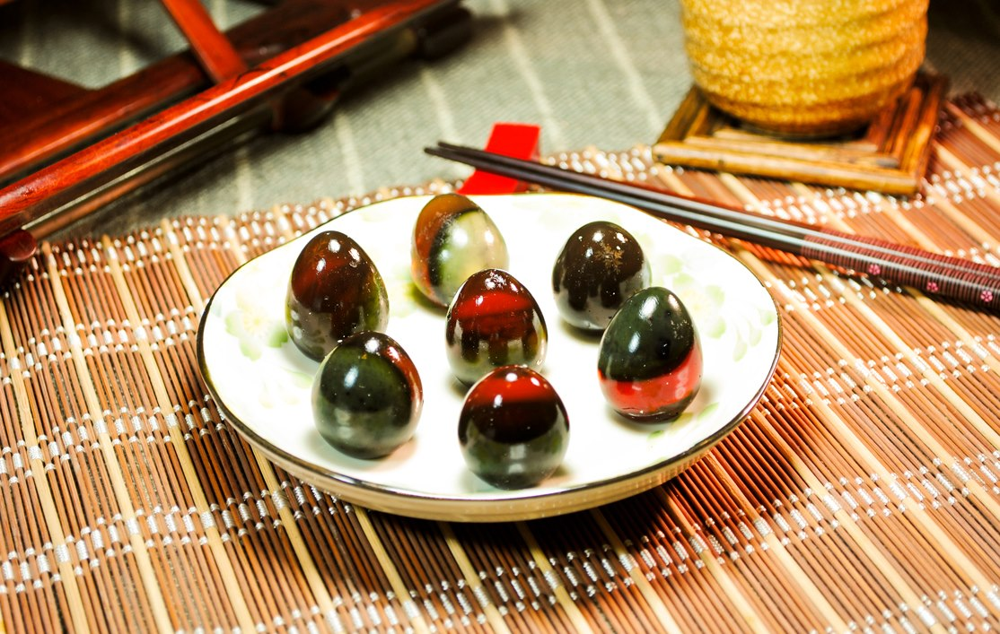
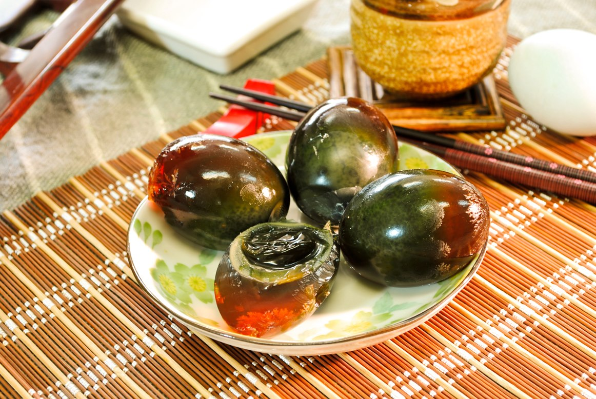

宋記油心鹹蛋




店家介紹
宋記的鴨蛋來自於氣候溫和的宜蘭，別於一般用池塘水養殖的養鴨場，他們的鴨子都用溪水養殖，生出來的鴨蛋幾乎都沒有腥味，非常香醇。製作成的皮蛋很Ｑ彈，蛋黃會出油、香氣也很重。另外這裡的鹹蛋爆香後油會被逼出，可以拿來炒任何菜，端午節、中秋節也是店內的旺季，較多人會來買回去包粽子或做月餅。另外宋記還有每到假日就會一爐接一爐，需要排隊的胡椒餅。帶著芝麻香的外皮，內餡幾乎都是瘦肉跟青蔥段做成的組合，帶有濃濃的黑胡椒香氣，一口咬下，肉汁還會慢慢的滴下來，十分美味。
店家資訊
電話：(02)2610-2456 時間：08:00~20:00 地址：新北市八里區龍米路二段172號
粉絲團